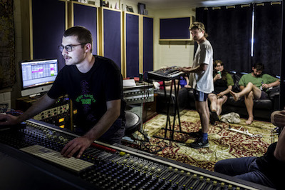

Jeremy Segal
composition
Recording & Mixing
Bands & Collaborations
bio

Photo by Alun Bartsch
Selected Discography
Didion's Bible - Faster Than You Think (recording, mixing)
Anjo - Weekender (mixing)
Cryptids - Jonah (recording, mixing)
The Drowners - The Evening World Comes Out to Meet You (recording, mixing)
Buckland - Broadcast To (mixing)
Wound Honey - Welcome to the Ick (mixing)
Didion's Bible - No Caveat (mixing)
contact: jeremy[dot]s[dot]segal@gmail.com